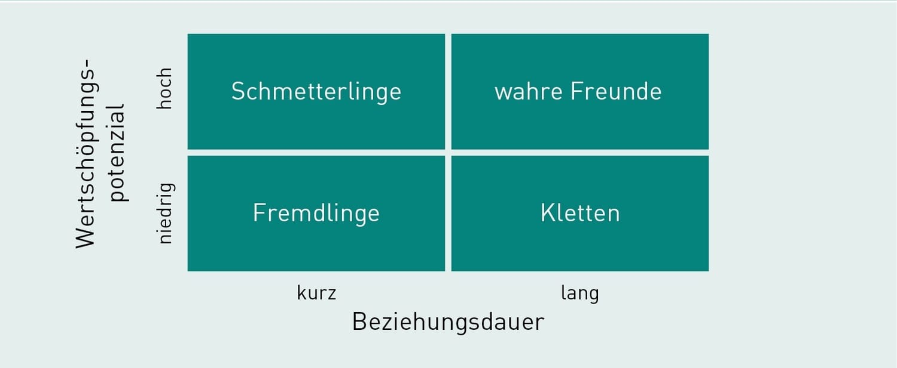

Customer-Relationship-Management (CRM) umfasst alle Aktivitäten, die dazu dienen, Kunden besser kennenzulernen, mehr zufriedenzustellen und in höherem Maße von ihnen zu profitieren. Ziel ist es, Kunden zu gewinnen, die das Unternehmen und seine Angebote wertschätzen und dies durch Preisbereitschaft, Markentreue und Weiterempfehlung zum Ausdruck bringen.
CRM beschreibt die Sammlung und Nutzung von Informationen zu individuellen Kunden und deren Interaktionen mit dem Unternehmen. Ziel ist es, die Kundentreue zu erhöhen und die Kundenkommunikation zu personalisieren.
Kunden werden in Datenbanken erfasst, sodass ihre Bedürfnisse und Profitabilität berücksichtigt werden können, um maßgeschneiderte Botschaften und Leistungen anzubieten.
Das Ziel des Marketings ist es, profitable Kunden zu gewinnen und zu binden. Ein wichtiger Aspekt ist der Customer Lifetime Value, der den gesamten Wert eines Kunden über dessen gesamtes Kundenleben misst.
Beispiel: Ein Supermarktkunde hat einen Customer Lifetime Value von etwa 50.000 Euro, wenn er wöchentlich 100 Euro ausgibt, 50 Wochen im Jahr einkauft und etwa 10 Jahre Kunde bleibt.
Kunden können in Portfolios gemanagt werden, um zu bestimmen, welche Kunden bedient werden sollen und welche Beziehungsstrategien angewendet werden. Das Ziel ist es, die gegenseitige Abstimmung von Kunden und Wertangebot zu optimieren.
